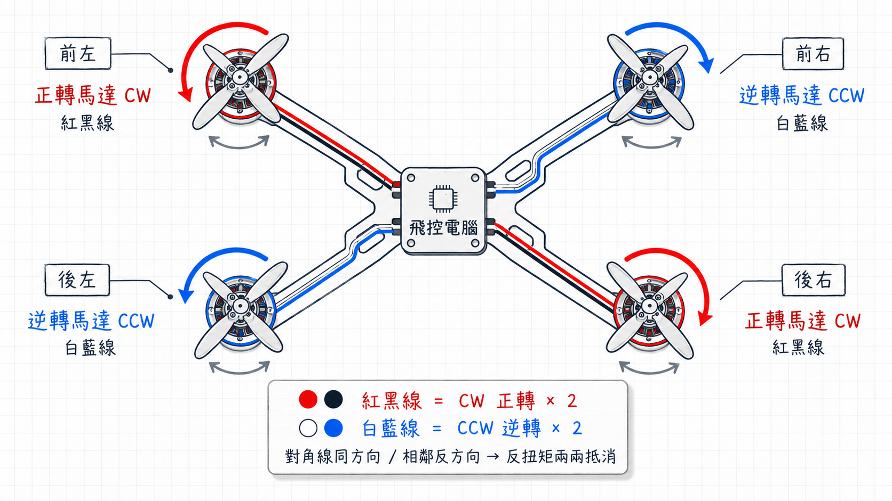

🚁 旋翼先把直升機抬起來

旋翼做什麼？
把空氣往下推
↔
直升機怎麼動？
被空氣往上推
這裡跟上一頁完全一樣：只要旋翼推下去的空氣夠多、夠快，反作用力就能把直升機抬起來。升起來不是問題，穩住方向才是問題。
上半節知道了：螺旋槳把空氣往下推，機器就會被往上推。可是旋翼一轉，還會帶來另一個麻煩：機身也想跟著反方向打轉。
直升機靠尾槳穩住機身；四軸沒有尾槳，為什麼也能穩住？
| 機種 | 怎麼產生升力 | 還要多做什麼 |
|---|---|---|
| ✈️ 飛機 | 靠機翼和前進速度產生升力 | 需要一直往前飛，速度太慢會掉下來 |
| 🚁 直升機 | 一個大旋翼把空氣往下推 | 要用尾槳穩住機身，不然會原地打轉 |
| 🛸 四軸 ⭐ | 四個螺旋槳一起把空氣往下推 | 兩正兩反互相抵消，不用尾槳 |
這頁先從直升機的麻煩開始，再看四軸怎麼用更簡潔的方法解決。
這裡跟上一頁完全一樣：只要旋翼推下去的空氣夠多、夠快，反作用力就能把直升機抬起來。升起來不是問題，穩住方向才是問題。

麻煩來了：大旋翼高速旋轉時，機身會被反方向扭回去。圖中的紅色弧形箭頭，就是機身想打轉的方向。
這個「被扭回去」的現象叫做反扭矩。你可以先把它想成一句話：旋翼往一邊轉，機身就想往另一邊轉。
所以直升機後面要裝一個小尾槳。尾槳不是裝飾，它會往側邊推空氣，產生一個側向的力，剛好把機身想打轉的力量抵消掉。

四軸不是沒有反扭矩，而是用更聰明的方法處理：兩顆馬達順時針轉，另外兩顆馬達逆時針轉。
只要力量差不多，兩邊造成的扭轉會互相抵消，機身就能穩穩停在空中。下一頁會把這個「兩正兩反」的位置講清楚。
現在知道四軸靠「兩正兩反」抵消反扭矩了。
下一頁來看：四顆馬達到底該放在哪些位置 →